Change analysis for Bangladesh for PRIMAP-hist v2.6_final compared to
v2.5.1_final
Overview over
emissions by sector and gas
The following figures show the aggregate national total emissions
excluding LULUCF AR6GWP100 for the country reported priority scenario.
The dotted linesshow the v2.5.1_final data.
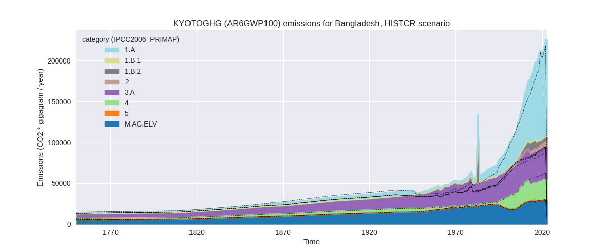
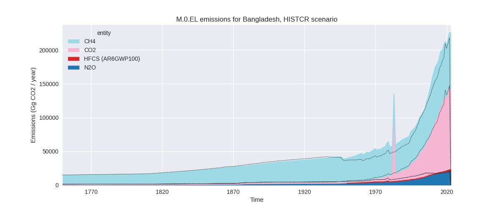
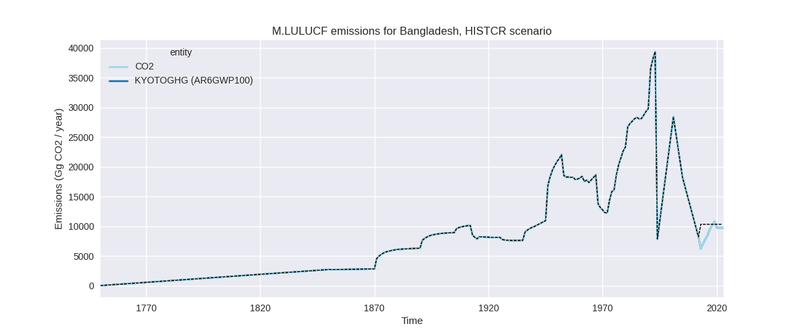
The following figures show the aggregate national total emissions
excluding LULUCF AR6GWP100 for the third party priority scenario. The
dotted linesshow the v2.5.1_final data.
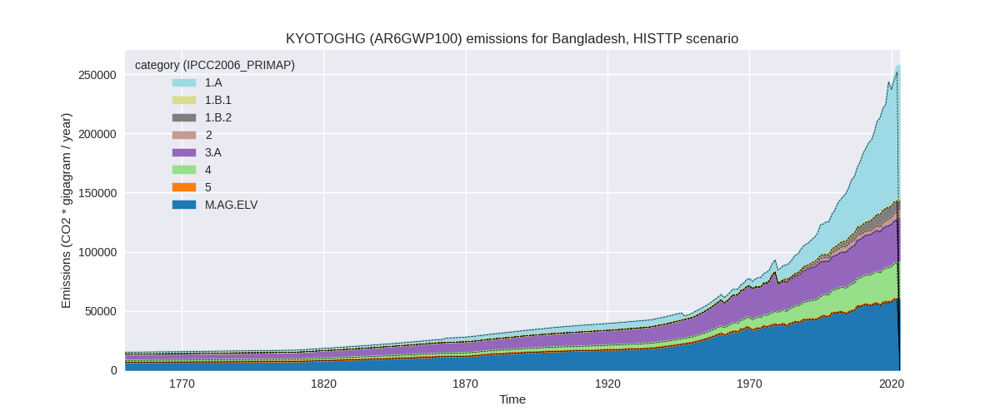
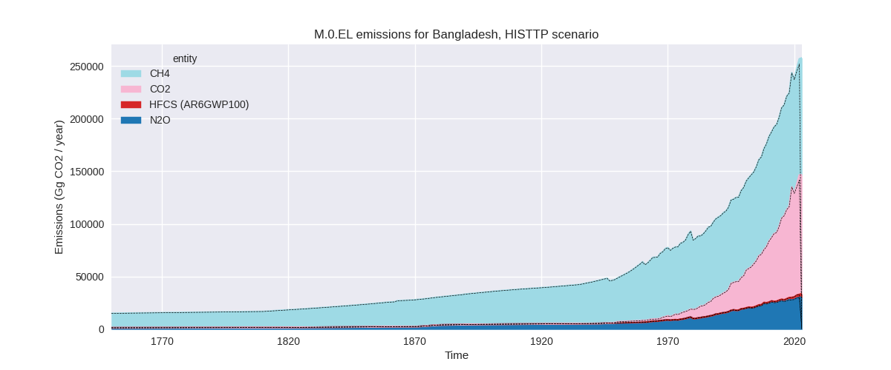
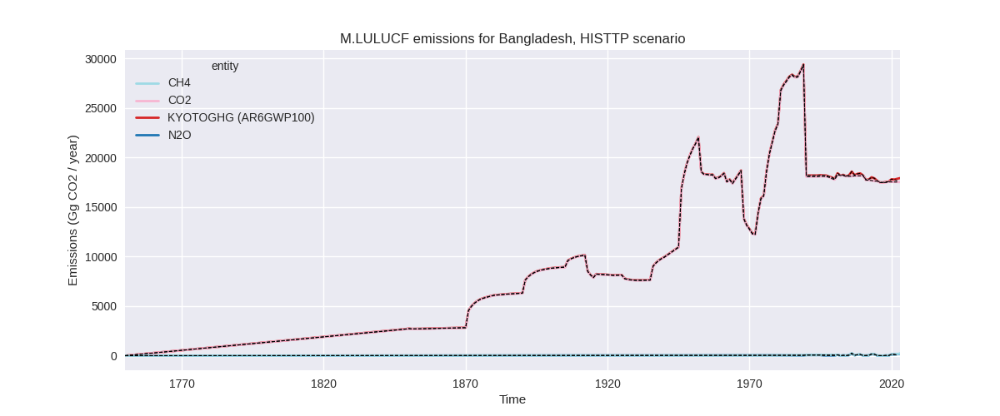
Overview over changes
In the country reported priority scenario we have the following
changes for aggregate Kyoto GHG and national total emissions excluding
LULUCF (M.0.EL):
- Emissions in 2022 have changed by 3.5%% (7710.84 Gg CO2 / year)
- Emissions in 1990-2022 have changed by 7.3%% (9229.79 Gg CO2 / year)
In the third party priority scenario we have the following changes
for aggregate Kyoto GHG and national total emissions excluding LULUCF
(M.0.EL):
- Emissions in 2022 have changed by 2.0%% (4920.04 Gg CO2 / year)
- Emissions in 1990-2022 have changed by 0.1%% (242.47 Gg CO2 / year)
Most
important changes per scenario and time frame
In the country reported priority scenario the
following sector-gas combinations have the highest absolute impact on
national total KyotoGHG (AR6GWP100) emissions in 2022
(top 5):
- 1: 3.A, CH4 with 15004.86 Gg CO2 / year (76.2%)
- 2: 4, CH4 with -7110.03 Gg CO2 / year (-24.0%)
- 3: 1.A, CO2 with -4868.90 Gg CO2 / year (-4.1%)
- 4: 1.B.2, CH4 with 4087.70 Gg CO2 / year (324.9%)
- 5: 1.A, CH4 with 890.52 Gg CO2 / year (36.7%)
In the country reported priority scenario the
following sector-gas combinations have the highest absolute impact on
national total KyotoGHG (AR6GWP100) emissions in
1990-2022 (top 5):
- 1: 3.A, CH4 with 11711.78 Gg CO2 / year (64.1%)
- 2: 3.A, N2O with -3313.93 Gg CO2 / year (-50.0%)
- 3: 1.B.2, CH4 with 3012.12 Gg CO2 / year (426.0%)
- 4: 4, CH4 with -2150.02 Gg CO2 / year (-12.5%)
- 5: 1.A, CO2 with -474.48 Gg CO2 / year (-0.9%)
In the third party priority scenario the following
sector-gas combinations have the highest absolute impact on national
total KyotoGHG (AR6GWP100) emissions in 2022 (top
5):
- 1: 1.A, CO2 with 4851.83 Gg CO2 / year (4.7%)
- 2: 4, CH4 with 162.24 Gg CO2 / year (0.6%)
- 3: 5, N2O with -126.78 Gg CO2 / year (-11.6%)
- 4: 2, HFCS (AR6GWP100) with 43.30 Gg CO2 / year (1.5%)
- 5: 1.B.2, CO2 with -33.28 Gg CO2 / year (-41.8%)
In the third party priority scenario the following
sector-gas combinations have the highest absolute impact on national
total KyotoGHG (AR6GWP100) emissions in 1990-2022 (top
5):
- 1: 1.A, CO2 with 225.11 Gg CO2 / year (0.5%)
- 2: 4, CH4 with 19.19 Gg CO2 / year (0.1%)
- 3: 4, N2O with 12.37 Gg CO2 / year (1.0%)
- 4: 5, N2O with -10.21 Gg CO2 / year (-1.7%)
- 5: 1.B.2, CO2 with -5.30 Gg CO2 / year (-28.2%)
Notes on data changes
Here we list notes explaining important emissions changes for the
country. ’' means that the following text only applies to the TP time
series, while means that it only applies to the CR scenario. Otherwise
the note applies to both scenarios.
- We have included data from BUR1 for 2013-2019. As the new data is
inconsistent with older submissions for livestock emissions we removed
UNFCCCDI data and data from NC3 for 3.A
- Livestock CH4 is much higher than in v2.5.1 because the new BUR1
data is much higher. N2O emissions are lower
- Waste CH4 is lower in the new data, especially visible for 2012 -
2013. We will revisit data consistency for a future PRIMAP-hist
release.
- Data in 1.A and 1.B.2 has changed because country reported data has
replaced third party data for 2023 - 2019
- Energy CO2 data has also changed for the TP time-series because EI
data is higher post 2020 in the 2024 version.
Changes by sector and gas
For each scenario and time frame the changes are displayed for all
individual sectors and all individual gases. In the sector plot we use
aggregate Kyoto GHGs in AR6GWP100. In the gas plot we usenational total
emissions without LULUCF. ## country reported scenario
2022
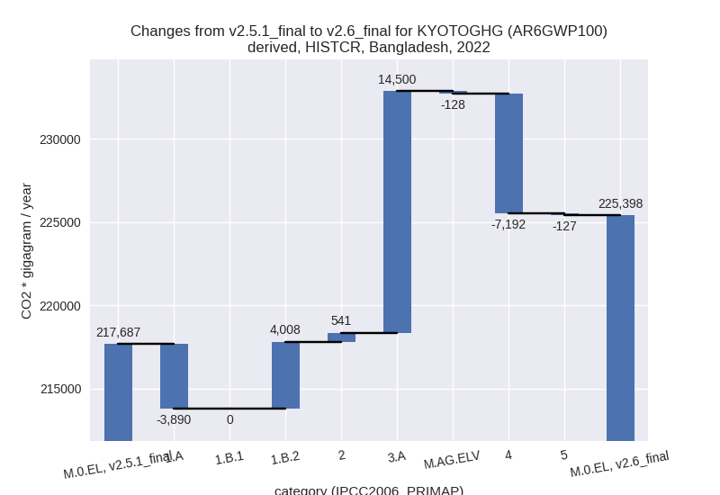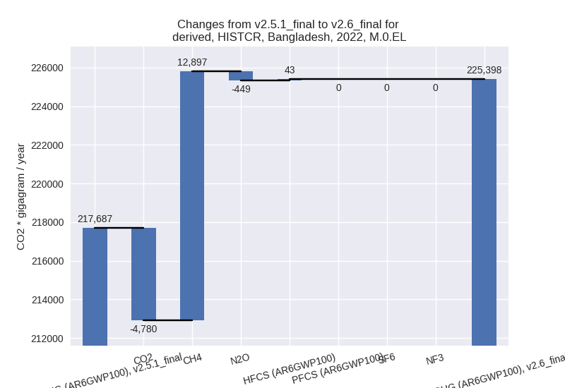
1990-2022
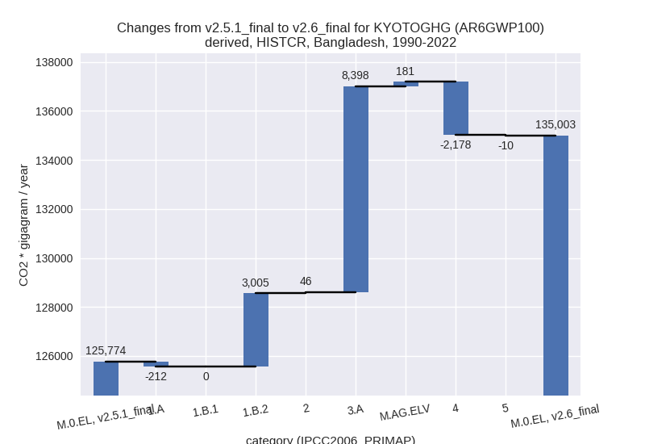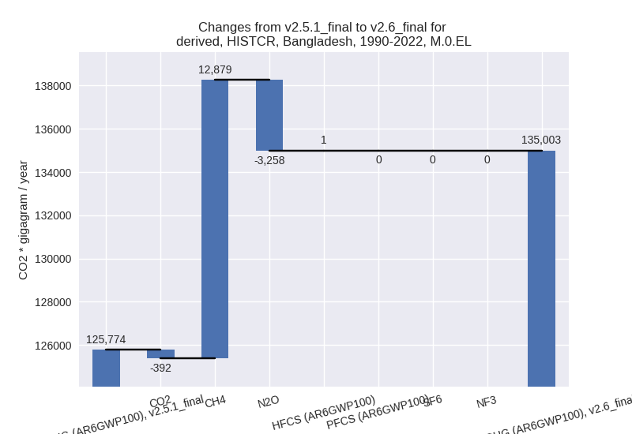
third party scenario
2022
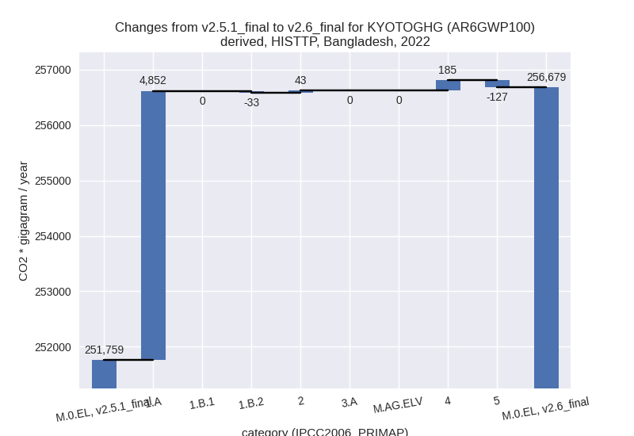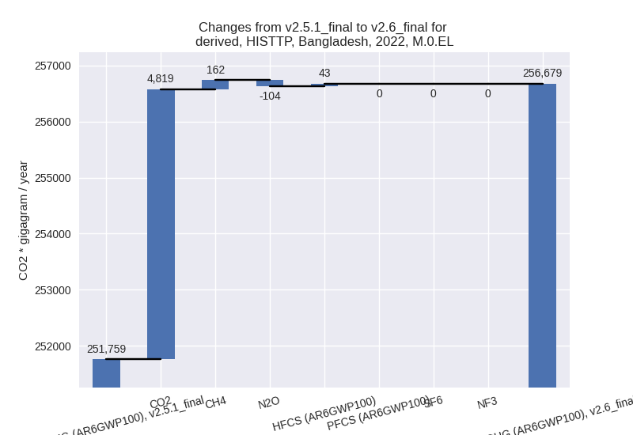
1990-2022
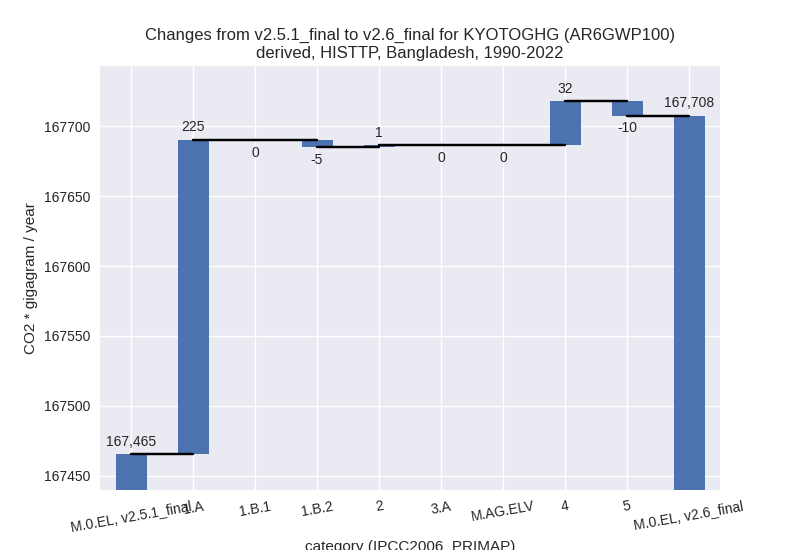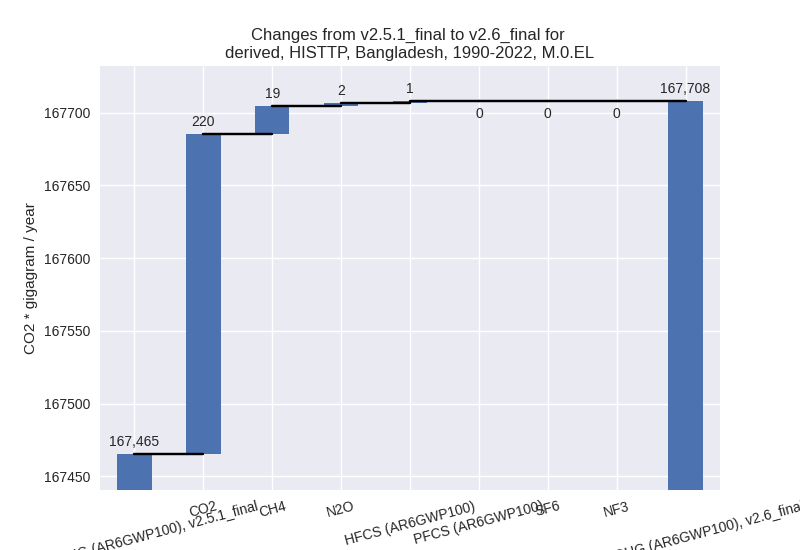
Detailed changes for the
scenarios:
country reported scenario
(HISTCR):
Most important changes
per time frame
For 2022 the following sector-gas combinations have
the highest absolute impact on national total KyotoGHG (AR6GWP100)
emissions in 2022 (top 5):
- 1: 3.A, CH4 with 15004.86 Gg CO2 / year (76.2%)
- 2: 4, CH4 with -7110.03 Gg CO2 / year (-24.0%)
- 3: 1.A, CO2 with -4868.90 Gg CO2 / year (-4.1%)
- 4: 1.B.2, CH4 with 4087.70 Gg CO2 / year (324.9%)
- 5: 1.A, CH4 with 890.52 Gg CO2 / year (36.7%)
For 1990-2022 the following sector-gas combinations
have the highest absolute impact on national total KyotoGHG (AR6GWP100)
emissions in 1990-2022 (top 5):
- 1: 3.A, CH4 with 11711.78 Gg CO2 / year (64.1%)
- 2: 3.A, N2O with -3313.93 Gg CO2 / year (-50.0%)
- 3: 1.B.2, CH4 with 3012.12 Gg CO2 / year (426.0%)
- 4: 4, CH4 with -2150.02 Gg CO2 / year (-12.5%)
- 5: 1.A, CO2 with -474.48 Gg CO2 / year (-0.9%)
Changes in the main sectors for aggregate KyotoGHG (AR6GWP100)
are
- 1: Total sectoral emissions in 2022 are 124932.46
Gg CO2 / year which is 55.4% of M.0.EL emissions. 2022 Emissions have
changed by 0.1% (117.64 Gg CO2 /
year). 1990-2022 Emissions have changed by 5.1% (2792.76 Gg CO2 / year). For
1990-2022 the changes per gas
are:
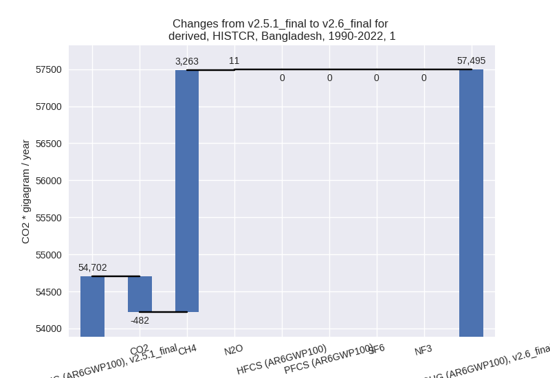
The changes come from the following subsectors:
- 1.A: Total sectoral emissions in 2022 are 119006.48
Gg CO2 / year which is 95.3% of category 1 emissions. 2022 Emissions
have changed by -3.2% (-3890.30 Gg
CO2 / year). 1990-2022 Emissions have changed by -0.4% (-212.02 Gg CO2 / year). For 2022
the changes per gas
are:
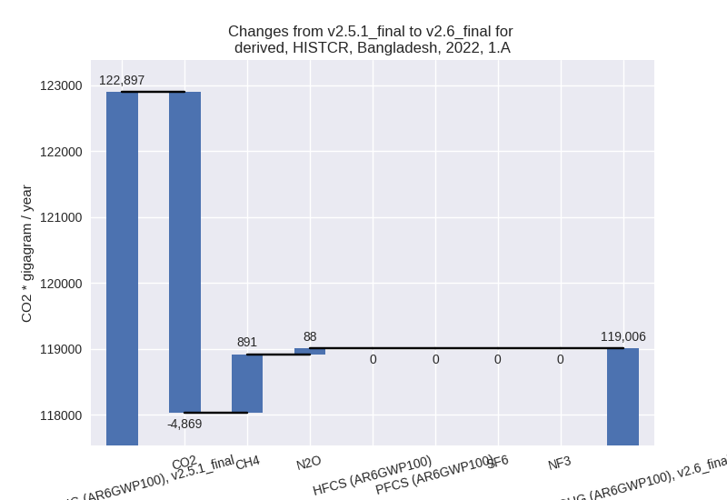
There is no subsector information available in PRIMAP-hist.
- 1.B.1: Total sectoral emissions in 2022 are 580.30
Gg CO2 / year which is 0.5% of category 1 emissions. 2022 Emissions have
changed by 0.0% (0.00 Gg CO2 /
year). 1990-2022 Emissions have changed by 0.0% (0.00 Gg CO2 / year).
- 1.B.2: Total sectoral emissions in 2022 are 5345.67
Gg CO2 / year which is 4.3% of category 1 emissions. 2022 Emissions have
changed by 299.6% (4007.93 Gg CO2 /
year). 1990-2022 Emissions have changed by 413.9% (3004.78 Gg CO2 / year). For 2022
the changes per gas
are:
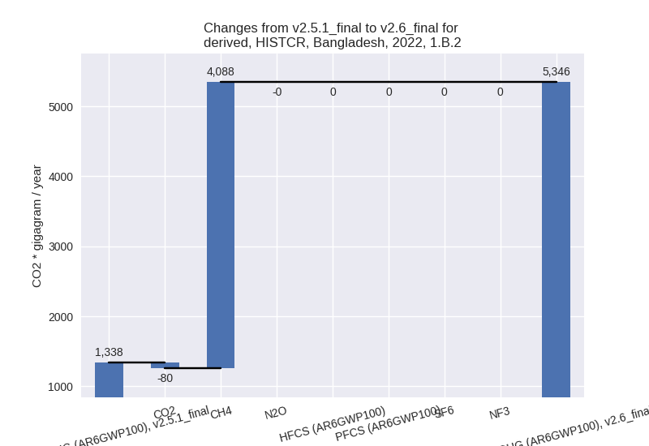
For 1990-2022 the changes per gas
are:
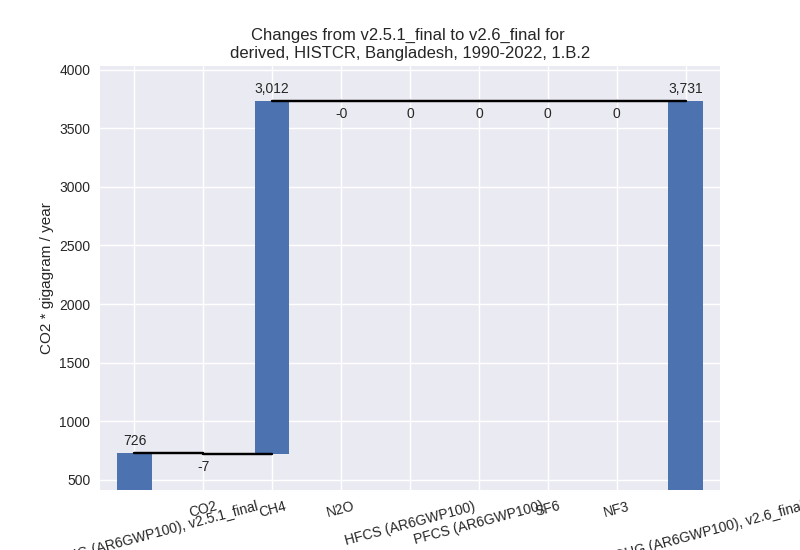
There is no subsector information available in PRIMAP-hist.
- 2: Total sectoral emissions in 2022 are 6142.64 Gg
CO2 / year which is 2.7% of M.0.EL emissions. 2022 Emissions have
changed by 9.7% (540.82 Gg CO2 /
year). 1990-2022 Emissions have changed by 1.4% (45.90 Gg CO2 / year). For 2022 the
changes per gas
are:
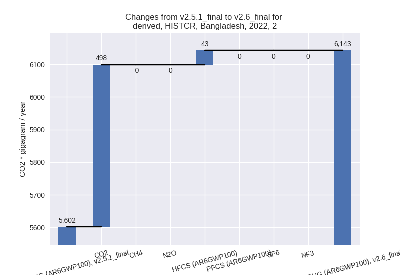
- M.AG: Total sectoral emissions in 2022 are 68997.42
Gg CO2 / year which is 30.6% of M.0.EL emissions. 2022 Emissions have
changed by 26.3% (14371.41 Gg CO2 /
year). 1990-2022 Emissions have changed by 17.6% (8579.23 Gg CO2 / year). For 2022
the changes per gas
are:
For 1990-2022 the changes per gas
are:
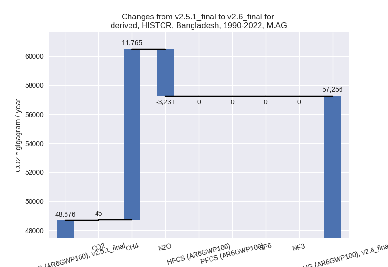
The changes come from the following subsectors:
- 3.A: Total sectoral emissions in 2022 are 39754.76
Gg CO2 / year which is 57.6% of category M.AG emissions. 2022 Emissions
have changed by 57.4% (14499.59 Gg
CO2 / year). 1990-2022 Emissions have changed by 33.7% (8397.85 Gg CO2 / year). For 2022
the changes per gas
are:
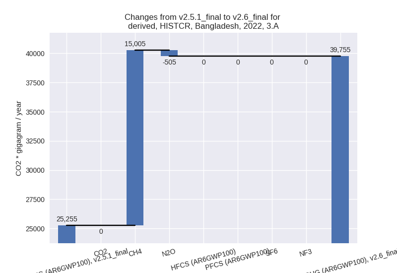
For 1990-2022 the changes per gas
are:
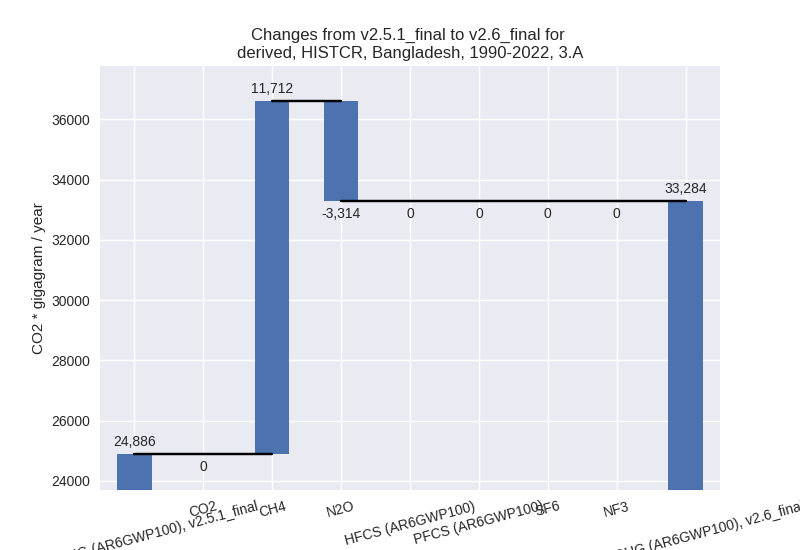
There is no subsector information available in PRIMAP-hist.
- M.AG.ELV: Total sectoral emissions in 2022 are
29242.66 Gg CO2 / year which is 42.4% of category M.AG emissions. 2022
Emissions have changed by -0.4%
(-128.19 Gg CO2 / year). 1990-2022 Emissions have changed by 0.8% (181.38 Gg CO2 / year).
- 4: Total sectoral emissions in 2022 are 24360.71 Gg
CO2 / year which is 10.8% of M.0.EL emissions. 2022 Emissions have
changed by -22.8% (-7192.24 Gg CO2 /
year). 1990-2022 Emissions have changed by -11.7% (-2177.88 Gg CO2 / year). For 2022
the changes per gas
are:
For 1990-2022 the changes per gas
are:
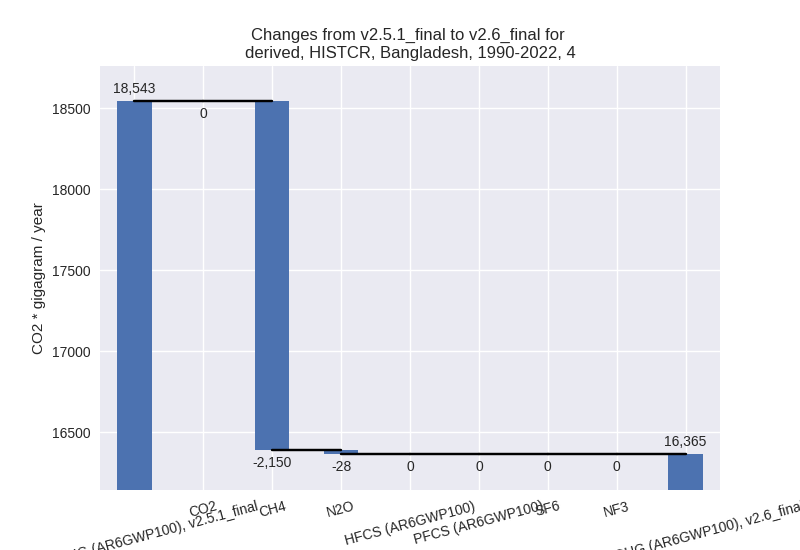
- 5: Total sectoral emissions in 2022 are 964.74 Gg
CO2 / year which is 0.4% of M.0.EL emissions. 2022 Emissions have
changed by -11.6% (-126.78 Gg CO2 /
year). 1990-2022 Emissions have changed by -1.7% (-10.21 Gg CO2 / year). For 2022 the
changes per gas
are:
third party scenario (HISTTP):
Most important changes
per time frame
For 2022 the following sector-gas combinations have
the highest absolute impact on national total KyotoGHG (AR6GWP100)
emissions in 2022 (top 5):
- 1: 1.A, CO2 with 4851.83 Gg CO2 / year (4.7%)
- 2: 4, CH4 with 162.24 Gg CO2 / year (0.6%)
- 3: 5, N2O with -126.78 Gg CO2 / year (-11.6%)
- 4: 2, HFCS (AR6GWP100) with 43.30 Gg CO2 / year (1.5%)
- 5: 1.B.2, CO2 with -33.28 Gg CO2 / year (-41.8%)
For 1990-2022 the following sector-gas combinations
have the highest absolute impact on national total KyotoGHG (AR6GWP100)
emissions in 1990-2022 (top 5):
- 1: 1.A, CO2 with 225.11 Gg CO2 / year (0.5%)
- 2: 4, CH4 with 19.19 Gg CO2 / year (0.1%)
- 3: 4, N2O with 12.37 Gg CO2 / year (1.0%)
- 4: 5, N2O with -10.21 Gg CO2 / year (-1.7%)
- 5: 1.B.2, CO2 with -5.30 Gg CO2 / year (-28.2%)
Changes in the main sectors for aggregate KyotoGHG (AR6GWP100)
are
- 1: Total sectoral emissions in 2022 are 123338.01
Gg CO2 / year which is 48.1% of M.0.EL emissions. 2022 Emissions have
changed by 4.1% (4818.54 Gg CO2 /
year). 1990-2022 Emissions have changed by 0.4% (219.81 Gg CO2 / year). For 2022 the
changes per gas
are:
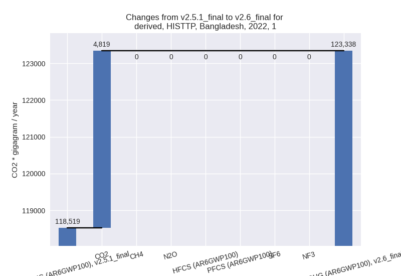
The changes come from the following subsectors:
- 1.A: Total sectoral emissions in 2022 are 113637.33
Gg CO2 / year which is 92.1% of category 1 emissions. 2022 Emissions
have changed by 4.5% (4851.83 Gg CO2
/ year). 1990-2022 Emissions have changed by 0.4% (225.11 Gg CO2 / year). For 2022 the
changes per gas
are:
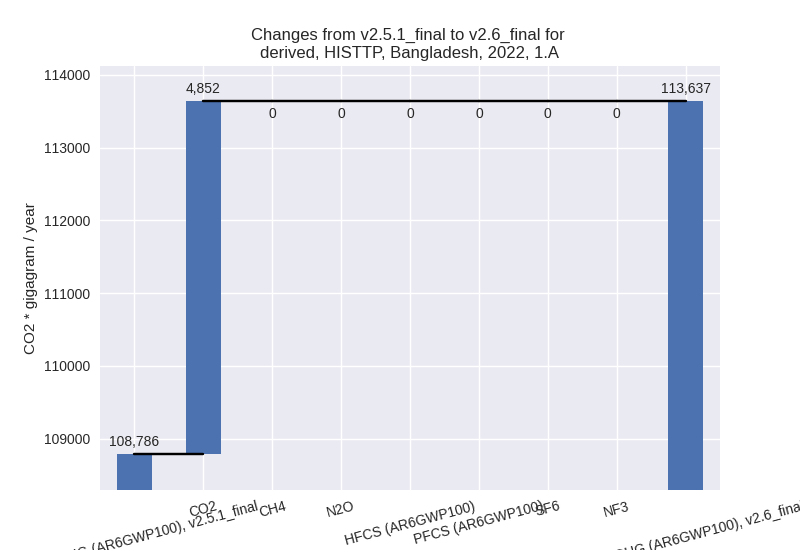
There is no subsector information available in PRIMAP-hist.
- 1.B.1: Total sectoral emissions in 2022 are 580.30
Gg CO2 / year which is 0.5% of category 1 emissions. 2022 Emissions have
changed by 0.0% (0.00 Gg CO2 /
year). 1990-2022 Emissions have changed by 0.0% (0.00 Gg CO2 / year).
- 1.B.2: Total sectoral emissions in 2022 are 9120.38
Gg CO2 / year which is 7.4% of category 1 emissions. 2022 Emissions have
changed by -0.4% (-33.28 Gg CO2 /
year). 1990-2022 Emissions have changed by -0.1% (-5.30 Gg CO2 / year).
- 2: Total sectoral emissions in 2022 are 6599.72 Gg
CO2 / year which is 2.6% of M.0.EL emissions. 2022 Emissions have
changed by 0.7% (43.29 Gg CO2 /
year). 1990-2022 Emissions have changed by 0.0% (1.31 Gg CO2 / year).
- M.AG: Total sectoral emissions in 2022 are 95507.39
Gg CO2 / year which is 37.2% of M.0.EL emissions. 2022 Emissions have
changed by 0.0% (0.00 Gg CO2 /
year). 1990-2022 Emissions have changed by 0.0% (0.00 Gg CO2 / year).
- 4: Total sectoral emissions in 2022 are 30269.37 Gg
CO2 / year which is 11.8% of M.0.EL emissions. 2022 Emissions have
changed by 0.6% (184.98 Gg CO2 /
year). 1990-2022 Emissions have changed by 0.1% (31.56 Gg CO2 / year).
- 5: Total sectoral emissions in 2022 are 964.74 Gg
CO2 / year which is 0.4% of M.0.EL emissions. 2022 Emissions have
changed by -11.6% (-126.78 Gg CO2 /
year). 1990-2022 Emissions have changed by -1.7% (-10.21 Gg CO2 / year). For 2022 the
changes per gas
are:
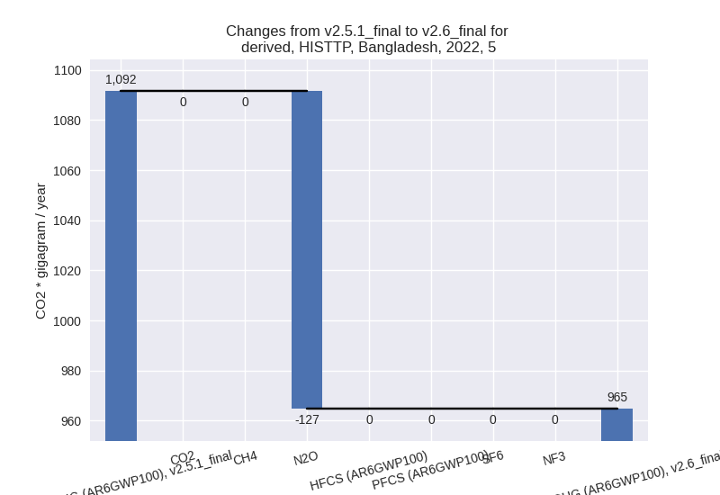